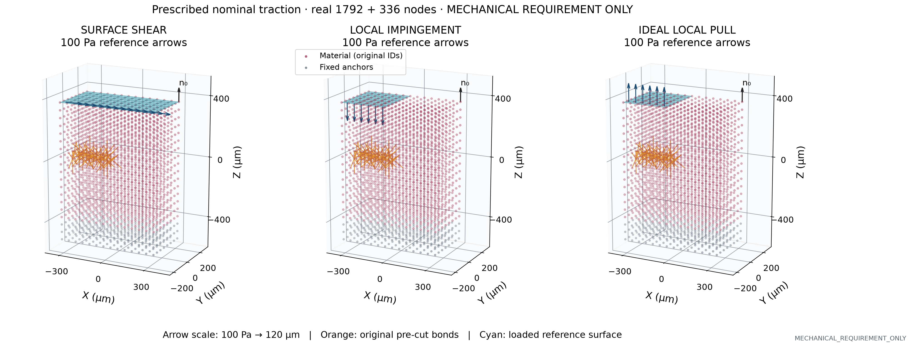
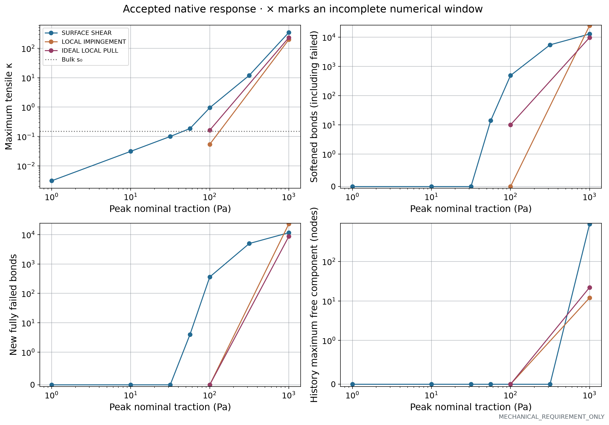
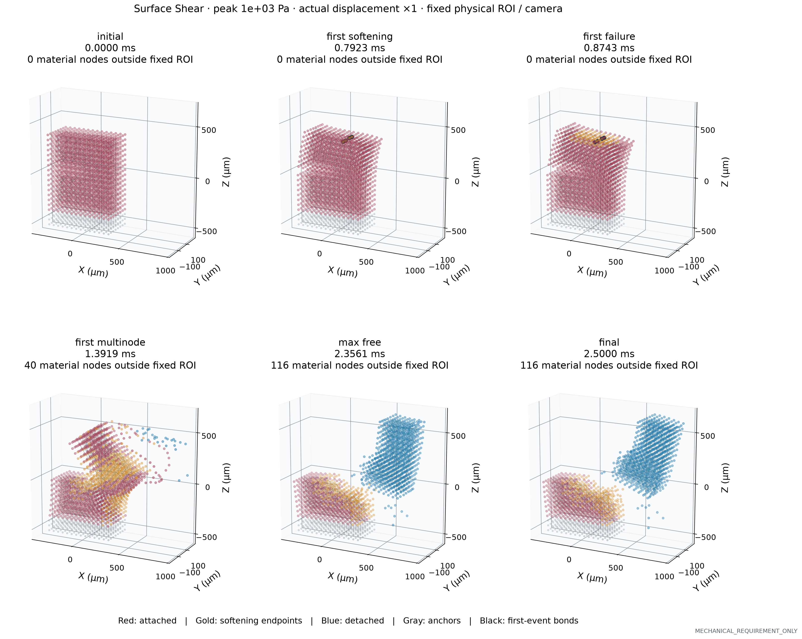
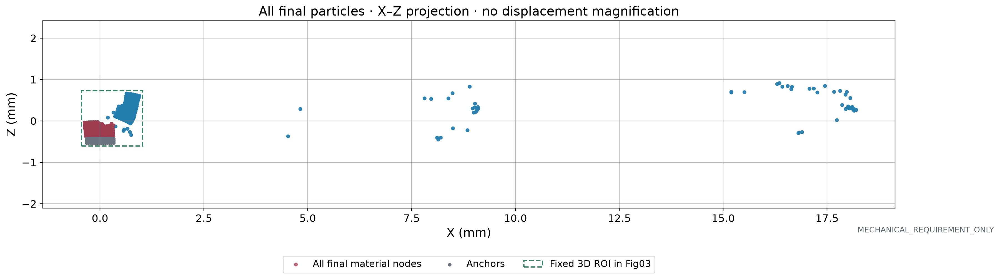
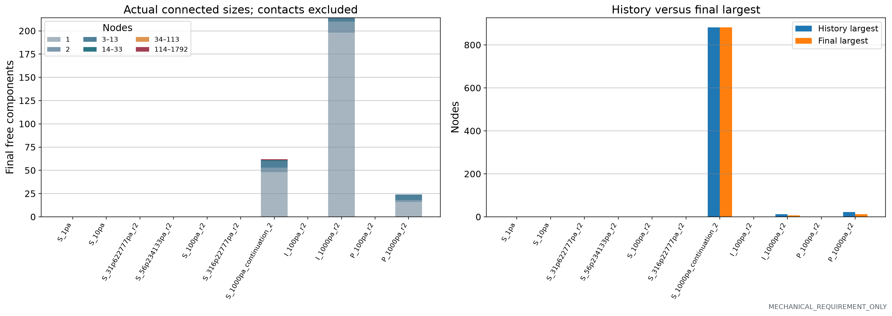
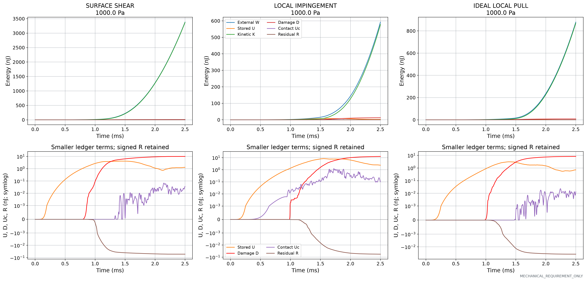
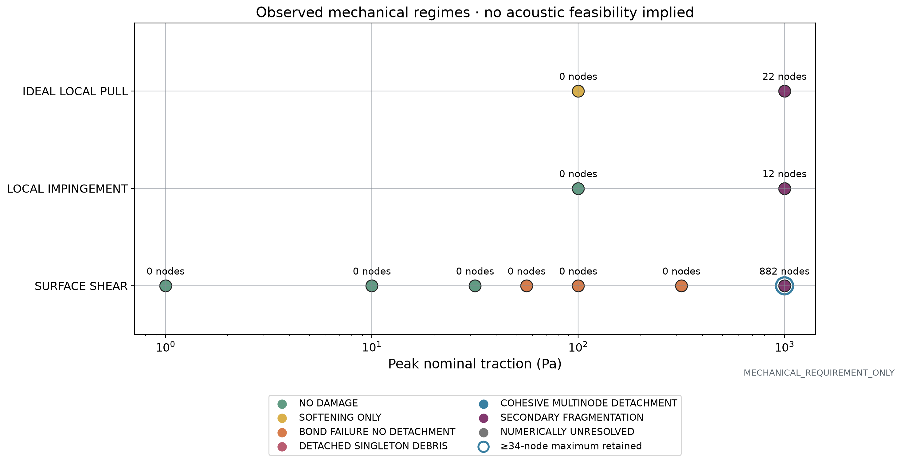

Mechanical requirement CSV · Brackets CSV · 中文科研报告 · Final status
PRESCRIBED_TRACTION_MECHANICAL_REQUIREMENT · finite 2.5 ms observation · nominal reference-area dead loads · not validated acoustic streaming.

Reference-area dead traction. 91 top quads for shear; 42 left top quads for local inward/outward loading. No extra cuts. Directions stay frozen; not follower pressure.

Pre-cut bonds excluded. Maximum κ includes already failed bonds and is not an intact-material strain measure. Count axes use symlog to retain actual zero responses. Lines join sampled cases, not a fitted threshold. Incomplete windows are explicit; a zero damage prefix cannot establish a full-window negative result.

Actual accepted states at displacement ×1 and a common physical ROI/camera. ROI is the joint envelope of components with at least 448 nodes plus anchors, across all shown frames. Outside-ROI material counts are explicit; the full final extent appears in Fig03b. Gold marks nodes incident to softening bonds; blue marks detached nodes. Sparse actual live bonds and first-event bonds only; no invented continuous crack surface.

All actual final material and anchor coordinates in X–Z projection. Fast detached debris is not hidden by the fixed main-body ROI used for the six 3D stages. The rectangular outline is a camera ROI, not a crack or material surface.

1–2 nodes are unresolved debris even when a two-node bond survives. 34 and 114 nodes exceed 200 and 300 μm volume-equivalent diameter. These are discretization measures, not clinical fragment certification.

Highest tested amplitude per mode. Upper panels show the full linear energy ledger; lower panels resolve U, D, Uc and signed R on symlog axes (linear threshold 0.001 nJ). Full CSV ledgers for every amplitude accompany the figure. Contact activation offset Jc is recorded separately. R is not material dissipation.

Classification follows accepted history; unresolved numerical cases are not powdering. Labels give the history maximum free size. A blue ring means that the same original members of a ≥34-node maximum remain connected at the end. Secondary fragmentation can concern smaller debris while that large component survives.